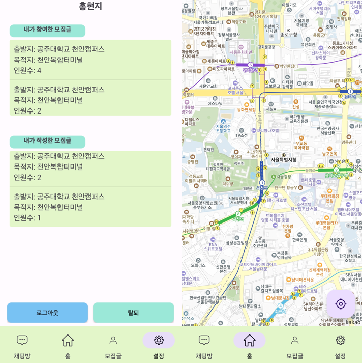

"현명하고 지혜롭게"
이름의 뜻처럼 현명하고 지혜롭게 공학적으로 사회문제를 해결하고싶은
공주대학교 소프트웨어학과 22학번 홍현지의 포트폴리오입니다
관심 기술
 |
 |
 |
 |
 |
 |
프로젝트
| 프로젝트명 프리미티브 홍보 심리테스트 페이지 프로젝트 설명 프리미티브 동아리 홍보를 위해 흥미를 유도할 수 있는 심리테스트 페이지를 제작하고자 함 사용 기술 HTML, CSS, JavaScript, Github 날짜 2024.01.24 ~ 2024.03.25 깃허브 주소 https://github.com/hyeonji0401/JoinPrimitive |
| 프로젝트명 공주대학교 행정 앱 프로젝트 설명 학과 수업 프로젝트로 학교 내의 민원 시스템을 효율적으로 바꾸기 위해 기존의 전화 방식에서 모바일 어플로의 변환을 목적으로 기획함 사용 기술 Java, SpringBoot, AndroidStudio, Github 날짜 2023.09.24 ~ 2023.12.06 깃허브 주소 https://github.com/hyeonji0401/KNU_Administration |
|  | 프로젝트명 TT 프로젝트 설명 카카오 로그인API, 카카오 지도API를 활용하여 택시 동승자를 구하는 어플을 동아리 스터디 목적으로 기획함 사용 기술 Java, SpringBoot, AndroidStudio, Github 날짜 2023.09.24 ~ 2023.12.06 깃허브 주소 https://github.com/hyeonji0401/KNU_Administration |